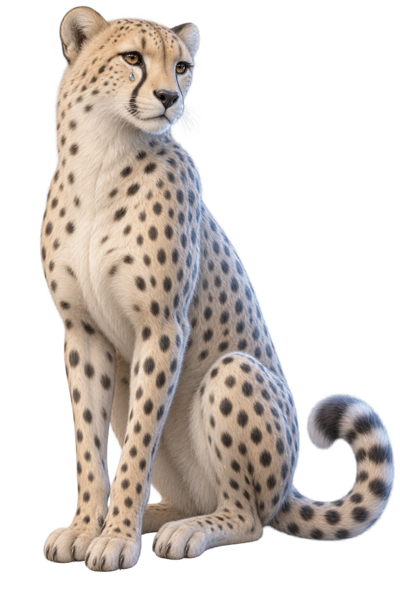
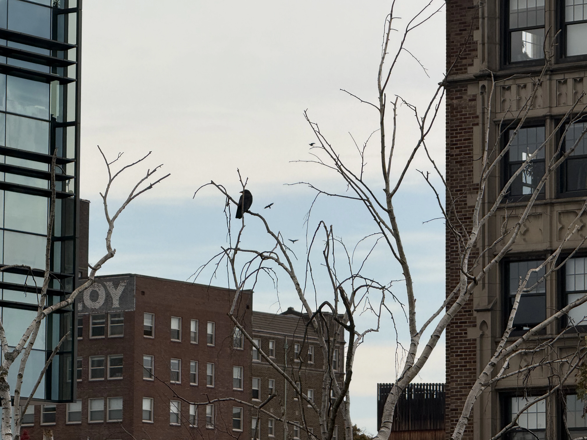
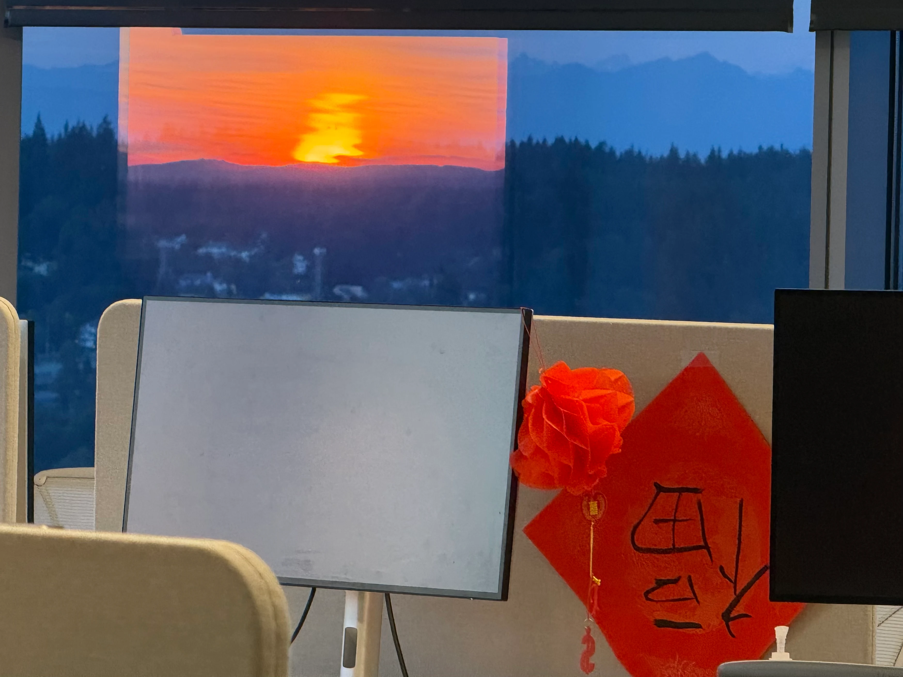
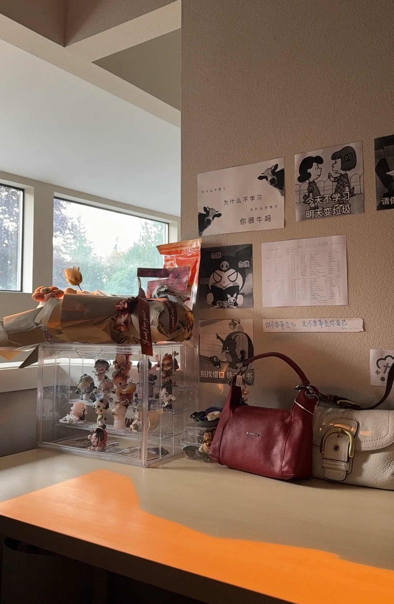

The brain
multitasks.
Speech and movement, running through nearly the same neurons. I’m mapping how they stay separate.
I WAS HOPING YOU’D STOP BY
My name is Beth Yue Ding.
I create. I have a ton of initiative.
I feel and care.
This is caduceus, the commerce’s symbol, mistaken for medicine’s for a century.
Cute, I work across both!
01 / THINGS I MAKE
Brains, robots, industry stuff
Speech and movement, running through nearly the same neurons. I’m mapping how they stay separate.
I worked across engineering subteams, the surgeons, and the commercialization and lab leadership side. Helping a life-saving device take shape from every angle at once was not something I expected to love as much as I did! The mechanics, the clinical side, the business of it, everything.
I make AI tools for operational efficiency across a lot of cross-functional teams now. Oh, and I really love the people I met there!
02 / LEAPS I TAKE
The fastest land animal has markings like tears.I’ve always loved that ambition and feeling can share a face.

brave, with a soft sideMY FIRST RESEARCH EVER
After my grandma’s cancer diagnosis, I read papers of all different fields, developed a crazy thought to create an approach that combined all of them, and wrote hundreds of cold emails to researchers all over the world.
OBSESSED, THEN SELF-TAUGHT
I saw BrainGate’s at-home BCI restore speech and cursor control for a participant, and I had to understand the BCI magic. So I cold-emailed the whole team. My grandma had to relearn speech after her strokes, that’s why it wouldn’t leave me.
And underneath all that ambition…
03 / THE SOFTER SIDE
01 / WAITING TO FLY

I am in such a rush to be recognized, to be seen, that I forgot the point of it all is to learn to see.
The time my eyes hurt from cs geeking and a resting crow reminded me I used to write just cuz.
02 / NOWHERE TO BE

The time when getting nowhere in particular was the whole point of the drive.
03 / THE ART OF SUBTRACTION

The time I cleaned my desk for the first time in years and saw my carpet again. (It's very fluffy!)
My favorite company: the people who make time disappear.
ALL OF IT, ME.
I create. I have a ton of initiative. I feel and care.
Beth Yue Ding